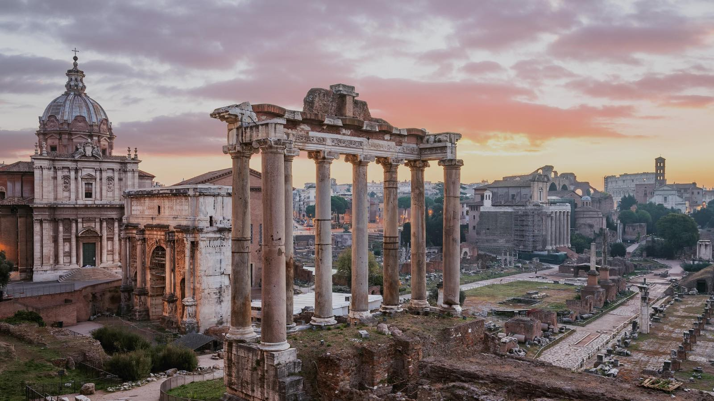

WE love italy!
Travelling around Italy remains one of those rare experiences in life- like the power of the first love- that can never be overrated. This country is intermingled with the beauties of history, art, food and fashion so effortlessly. As you explore Italy, you'll stand face-to-face with some of the world's most iconic images from this 2,000-year history. You will find sunny isles, glacial lakes and fiery volcanoes, rolling vineyards and urban landscapes harbouring more UNESCO World Heritage sites than any other country on Earth. Italy is the country filled with many aesthetics. Visitors never leave without a fervent desire to return.
Recharge your body, mind and soul in Italy. The beauty of Italy will heal you and give you the best energy.
Figuring out where to go when you visit Italy is no mean feat. From ancient hilltop towns to modern bustling cities, dramatic mountain landscapes to sweeping coastal scenery, each pocket of Italy delivers something different.
While the risk of tumbling rocks means you can no longer stroll the elegant switchback bends that make up Via Krupp, that doesn’t stop the view at the top from being any less spectacular. Head up to the Augustus Gardens and gaze out at the best of Capri laid before you
Serving up some of the country’s best gelato (an accolade that isn’t given out freely), an afternoon in San Gimignano is always one well spent. The hilltop town provides a relaxed antidote to the bustle of Siena and with its enchanting views across the cypress-topped hillsides, it feels a million miles from city life.
Tucked away in a quiet cove and joined onto the mainland by just a narrow strip of land, Isola Bella is a pinprick of an island with more than its fair share of natural beauty. So-called ‘The Pearl of the Ionian Sea’, wait for low tide before heading across the island to discover hidden sea grottoes and pebbled beaches in a place that will feel all your own.
Praiano is a small town perched on the rockey cliffs of the celebrated Amalfi Coast that offers vistas of unparalleled beauty and a leidurely pace of life.
Bologna is one of those places that really comes into its own come sunrise and sunset. Clad in terracotta, the shifting sun adds a whole new dimension to the city as those red hues are lifted and bathed in a golden light, most befitting of the city nicknamed ‘La Rossa’.
Driving Through The beautiful Valle d'ltria, you will see Ostuni long before you arrive; the vast 'White City' rising high above the ocean of olive trees that sweep through this verdant area of Puglia.
Built atop a hill to protect from invaders, Ostuni is a certifiable labyrinth. A maze of alleyways, staircases and arches, of houses built upon houses, of hundreds of years of history laid out before you in a way no map can truly explain or capture. Dead ends and pretty little gardens, glimpses of the Adriatic sea, green doors and bright blue skies; everything and nothing may lie around the next corner you take.
This white-washed hilltop town could be Greece on first glance but come around 8 or 9PM in the summer, when local families spill out onto the street to enjoy a meal al fresco in the balmy evening sun; you’re left in no doubt that this is Italy at its purest.
Ostuni Puglia
This Venetian district is home to some of the city's most reowned art collections, including Galleria dell'Accademia-which is packed with Venetian Renaissance works- and the Peggy Guggenheim collection, which houses 2oth century art in gorgeous palazzo setting.
Everyone always talks about Bellagio when it comes to Como, but that’s only because they haven’t been to Varenna. Overlooking the Lake’s most famous town, this quiet neighbor has an unpretentious charm with its old fishermen’s houses and picturesque waterfront.
Rolling effortlessly off the tongue, you need only say ‘Locorotondo’ to feel the allure of this beautiful Apulian village. This is not a town of grand attractions or famous tales, but that’s what makes it so irresistible. Calm and quiet, lose yourself in the myriad of side streets of a town that time forgot.
A jumble of pastel buildings, set overlooking the azure hues of sky meets sea and framed by tumbling geraniums and bougainvillea, Santa Margherita is that scene straight out of a '50s postcard. Brightly painted fishing boats bob gently in the harbor to complete the scene.
In a city synonymous with slick design and effortless style, Brera typifies what it is to be Milano. A bohemian neighborhood of decades gone by, Brera now drips with sophistication. Pull up a chair at one of the al fresco spots on Piazza del Carmine and enjoy an aperitivo in what is easily one of Milan’s most attractive neighborhoods.
Camogli is the Riviera that the world forgot. You’ll find the same steep hillsides and pastel hued homes of the Cinque Terre, but what you won’t find are the crowds. Just sleepy enough to feel undiscovered but with enough local life and quaint trattorias to easily while away the days, this is a place to go before everyone else.
Limestone cliffs pockmarked as the surface of the moon, walking through the sassi neighborhoods of Matera has an almost otherworldly feel to it. Hewn out of the rock, the city is testament to regeneration with subterranean tunnels that once housed the poor and now takes the shape of UNESCO World Heritage sites, museums and luxury hotels. Stay for the night or just for an aperitivo; Materia is living history.
Set to a backdrop of verdant hillsides and conical volcanoes, the beauty of the bay of Rinella is that peculiar kind, born out of contrast. Volcanic sands the color of night, are lapped by those aquamarine Mediterranean waters and perfectly offset by the pastel pink, blue, and white hues of the seafront villages.
Arriving at Villa Cimbrone feels a bit like arriving at a grand party hosted by the Montagues or the Capulets. Faced with a towering set of doors, step through into this tranquil estate and stroll through the manicured gardens before coming to rest at the aptly named Terrace of Infinity, overlooking the Amalfi Coast in all its glory.
Villa Cimbrone, Ravello
Ruggedly beautiful, Pantelleria has long been a favorite of in-the-know Italian society looking for an escape to somewhere altogether more secluded. Offering a whole new spin on wellness, head up to Lago di Venere where the warm waters form and volcanic mud form a natural spa at the heart of the island.
While the crowds head East to the better-known Lake Como and Maggiore, hang a left and check out Lake Orta instead. Smaller in stature and status, this is easily the Italian Lake District’s best-kept secret. Italians have dubbed it ‘Cinderella’ for so softly-spoken is its beauty that Orta takes on an almost mythical quality, such that even once you’re here, you can’t quite bring yourself to believe it.
If you sailed out from Sardinia’s Costa Smeralda, you would come across this cluster of islands and, until now, you would probably have kept on sailing. Why though? Dotted amid the larger islands, the tiny isolotti of the La Maddalena islands boasts some of the clearest waters and quietest beaches in all the Mediterranean. Stop off, it’d be rude not to.
Come for the Ancient Greek mythology, but stay for the local charm. The beaches here are well-known during the summer months, but less so are the tiny fishing villages of Chinalea and Scaro Allegio. It’s here that you’ll get a real sense for Scilla as boats bob in the harbor and fishermen tend to their nets while sharing a tale or two.
A favorite haunt of Roman nobility, Spoleto has managed to hang onto its charm over the centuries and now makes for a tranquil day trip into the Umbrian hillside. Start in the medieval Upper Town with a visit to the Duomo, before making your way down through the modern Lower Town to the ancient city walls.
Home to a staggering eight UNESCO World Heritage Sites, Ravenna is hardly ‘under the radar’ but some places are well-visited for a reason. Combine the historical city with a killer gourmet scene and a stunning classical music festival and you get a sense of classic Italia as you switch your phone off and forget the emails for a few days.
The best beaches have always been those only accessible by boat and Spiaggia delle Due Sorelle is no exception. Years of being overlooked in favor of the Cinque Terre and Amalfi Coast has left this strip of coastline untouched and unspoiled. Pack a picnic—you won’t find anything else on this serene stretch of sand—and while away an hour or two.
Here're some of the most popular and most visited places in Italy; also the places you shouldn't miss.

The best time to visit Italy is during spring (March-May) and autumn (September-November), when the temperatures are comfortable and there are fewer crowds.
Wildflowers in early April and rising temperatures through to the end of June are a real draw. From October, the summer heat eases off, the grape harvest is in full swing, and the cities are quieter for sightseeing.
Temperatures in the south remain mild in winter. While it is the off-season and some attractions have limited opening hours, it’s still an enjoyable time to explore many of the country’s historical sites. Winters in northern Italy, however, are normally wet and cold.
The summer months of July and August see higher temperatures and visitor numbers reach their peak. Prices are also higher.
Hot summer days in Italy are the best!